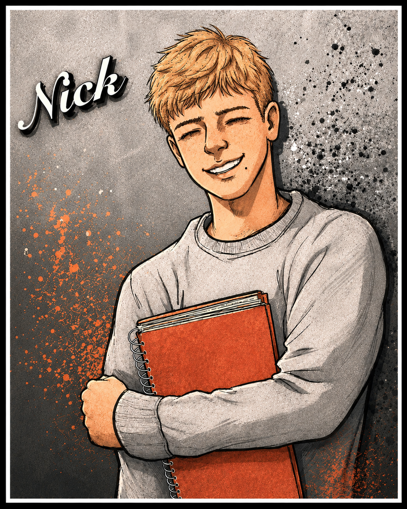
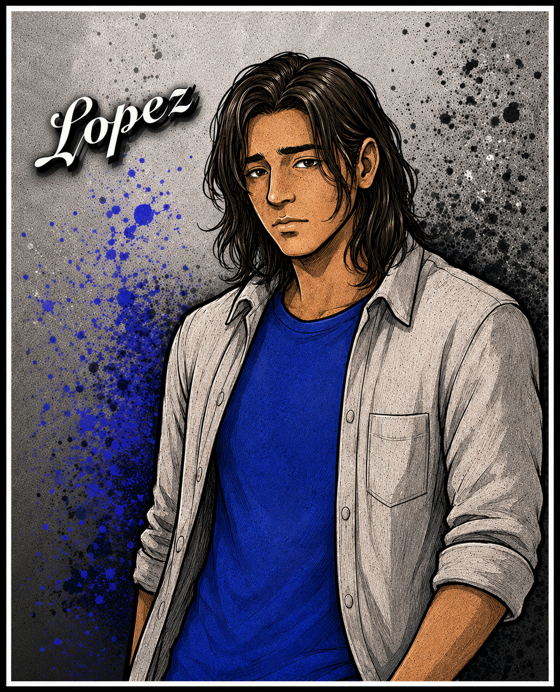
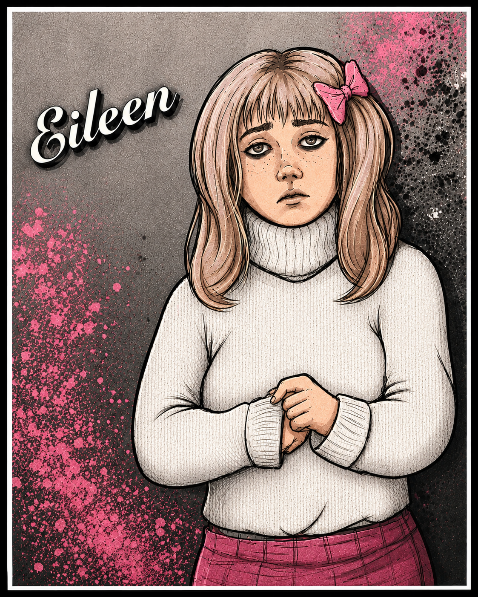
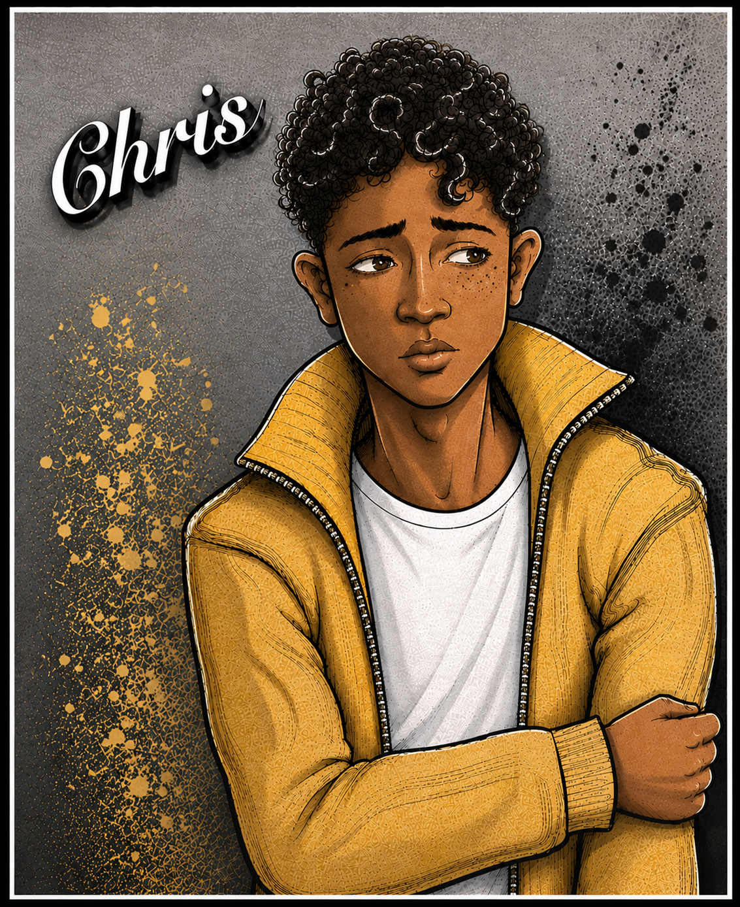
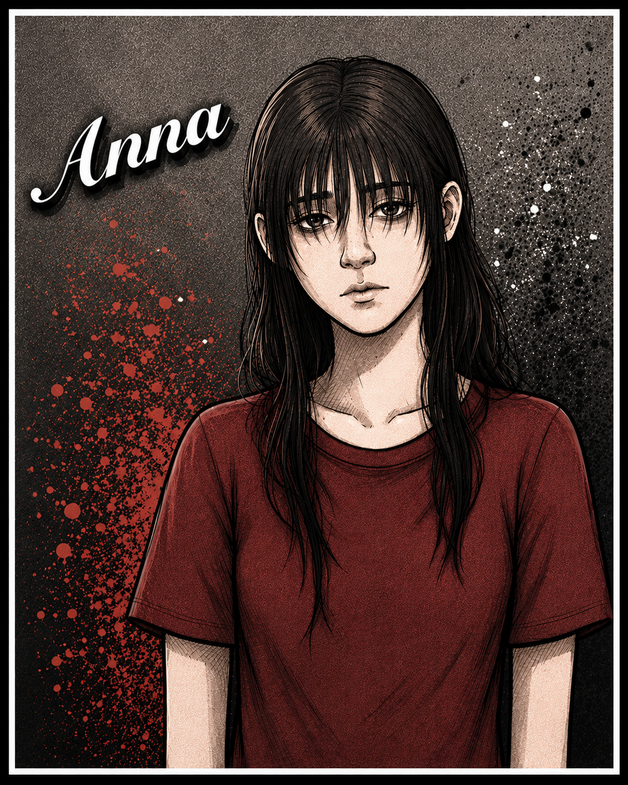

Meet the Real Family

Nicholas "Nick" Barnhart
Born: Dec 24, 1971
Nick was the quintessential boy-next-door. Standing about 5’11’’ with light brown hair and striking green eyes, he looked the part perfectly. Fittingly, he lived in the center house of the cul-de-sac, serving as both the literal and figurative anchor for his tight-knit circle of friends. Nick is the definitive anchor of the core friend group in Real Family. The literal and figurative center of his suburban world, he embodies the "boy-next-door" archetype. Responsible, well-liked, and deeply loyal, Nick’s youth is defined by his commitment to maintaining the bonds of his inner circle, navigating an intense first love, and quietly beginning a complex internal search for his own purpose and identity. Beneath his stable, capable exterior, Nick's youth marks the quiet beginning of a deeply introspective journey. He grapples with early, unspoken questions about identity, belonging, and what lies beyond the comfort of the cul-de-sac, setting the stage for the complex personal growth of his later years.

Juan Carlos Lopez, Junior
Born: Aug 10, 1971
Juan Carlos Lopez, Junior “Lopez” was born to first-generation Cuban immigrants. Standing on the shorter side, he had dark, tanned skin that contrasted strikingly with a perfect smile and bright white teeth. His features were defined by high, prominent cheekbones and narrow eyes that were a deep, striking shade of near-black. Framing his face was a mane of long, black, wavy hair that completed his distinctive look. Lopez serves as a powerful exploration of loyalty, community defense, and the heavy toll of carrying unaddressed anger. Beginning his journey as a fierce, protective older-brother figure to his neighborhood peers, Lopez’s arc takes a complex turn as he grapples with prejudice, systemic pressures, and personal resentment. His ultimate path is one of maturity, humility, and the difficult work of accountability and reconciliation. Lopez’s arc redefines what it means to be strong. He evolves from a character who equates strength with physical defense and unyielding toughness into a man who understands that true strength lies in vulnerability and owning his mistakes.

Eileen Nicole Spivey
Born: Jun 1, 1972
Eileen Nicole Spivey was born on June 1, 1972. Her wide-eyed, romantic idealism is the core of who she is in her youth. Her appearance during this time is neat, dependable, and pleasant, matching the "good girl" persona she presents to her family and peers. She looks like the quintessential girl-next-door, with a warmth that draws people in, particularly in her close-knit friend group. Even as a teenager, Eileen experiences early flashes of the wanderlust and existential questioning that later define her. She feels a subtle, persistent tug that there is a wider, more profound world waiting beyond the familiar streets of Arlington. Her high school years are anchored by the warmth of the Spivey household. This environment gives her a strong sense of security, though it also creates a comfortable baseline that she will eventually feel a powerful need to break away from in order to truly test her own strength. Eileen’s high school experience highlights the theme of outgrowing a comfortable cage. Her life is "good" by traditional standards, making her underlying restlessness all the more confusing to her teenage self.

Christopher "Chris" Mills
Born: Jan 9, 1972
Christopher “Chris” Eugene Mills was born on January 9, 1972. An only child raised by a single parent, Chris was a mixed-race, light-skinned young man with a slender build and soft, curly black hair. As Anna’s best friend, he was fiercely loyal to his tight-knit circle of five, though he naturally preferred to keep a low profile and remain comfortably in the background of their group dynamic. Chris is the creative heartbeat and theatrical soul of the core friend group in Real Family. Bound to his friends by deep history and shared milestones, Chris’s arc is a magnificent 10-year journey of self-discovery, identity reclamation, and creative triumph. Behind his bright, performance-ready exterior lies a survivor who transmutes personal trauma and physical scars into a captivating, authentic presence. As Chris grows and begins to outgrow the immediate confines of his youth, he sends a poignant, deeply honest letter inside a Christmas card to his friends. This letter serves as a major narrative marker, signaling his impending life changes, his need to step into the wider world, and his commitment to chasing his true calling.

Anna Maria Kiniski
Born: Oct 30, 1971
Anna Maria Kiniski was born on October 30, 1971. Anna Kiniski is one of the emotional anchors of Real Family. Her journey is a powerful testament to resilience, tracing her evolution from a deeply traumatized, hyper-vigilant young girl into a fiercely confident, independent supermodel. Defined by her quiet strength, Anna’s arc captures the profound impact of the chosen family and the painful, beautiful process of healing. She is characterized by rich, black, shoulder-length hair that frames a distinctly pale complexion. This stark contrast gives her a classic, timeless look that easily catches the camera's eye. Her green eyes are her most captivating feature, frequently described as stunning. In her youth, they likely conveyed the hyper-vigilance and quiet observation of a girl trying to remain unseen. As she matures, those same eyes become a powerful tool in her modeling career, projecting a deep, soulful intensity and authentic emotion.
About the Artist
Ember Koel